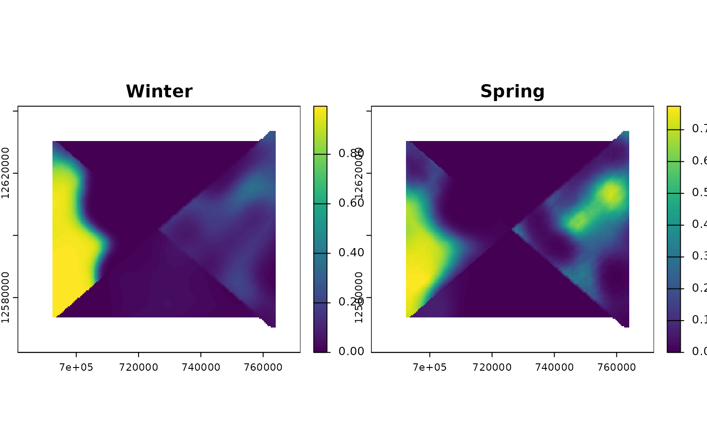
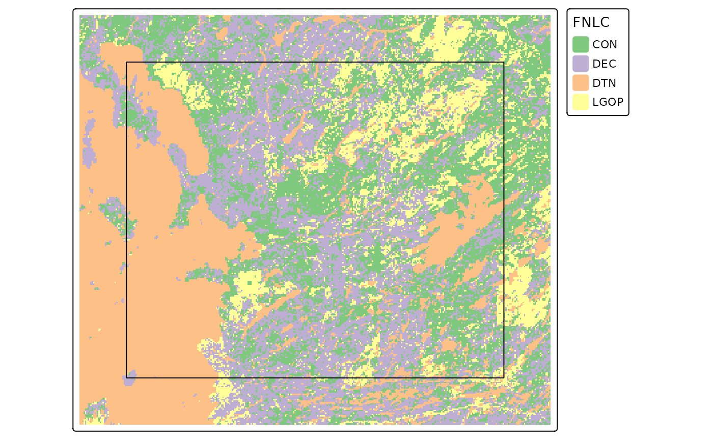
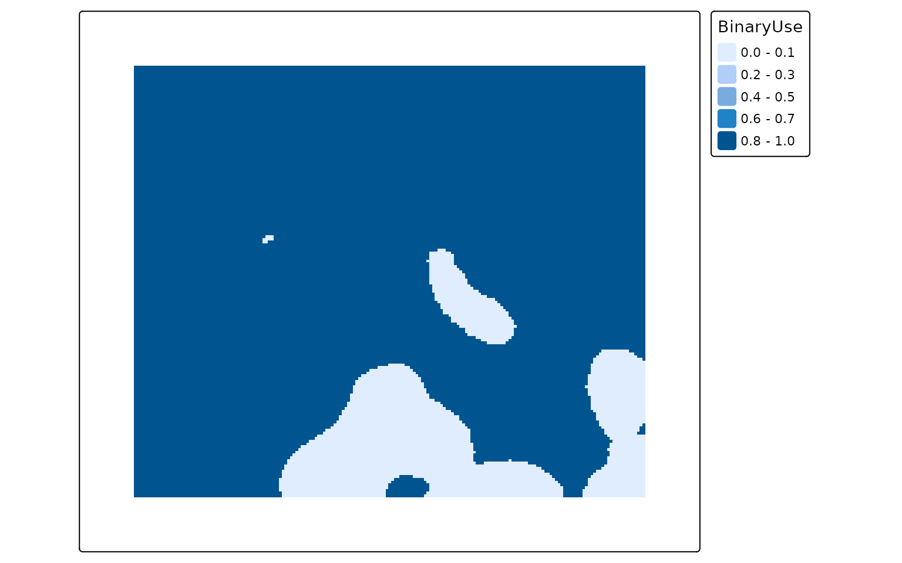

Introduction
This vignette gives details on the use of the
caribouHabitat function. This function implements the
caribou resource selection probability functions (RSPF) described in Hornseth and Rempel,
2016 in R. They were previously written in LSL and a goal of this
package is to make them more accessible to a wider range of users.
library(caribouMetrics)
#> Loading required package: nimble
#> nimble version 1.3.0 is loaded.
#> For more information on NIMBLE and a User Manual,
#> please visit https://R-nimble.org.
#>
#> Note for advanced users who have written their own MCMC samplers:
#> As of version 0.13.0, NIMBLE's protocol for handling posterior
#> predictive nodes has changed in a way that could affect user-defined
#> samplers in some situations. Please see Section 15.5.1 of the User Manual.
#>
#> Attaching package: 'nimble'
#> The following object is masked from 'package:stats':
#>
#> simulate
#> The following object is masked from 'package:base':
#>
#> declare
library(dplyr)
#>
#> Attaching package: 'dplyr'
#> The following objects are masked from 'package:stats':
#>
#> filter, lag
#> The following objects are masked from 'package:base':
#>
#> intersect, setdiff, setequal, union
library(terra)
#> terra 1.8.70
#>
#> Attaching package: 'terra'
#> The following objects are masked from 'package:nimble':
#>
#> values, values<-
library(sf)
#> Linking to GEOS 3.12.1, GDAL 3.8.4, PROJ 9.4.0; sf_use_s2() is TRUE
pthBase <- system.file("extdata", package = "caribouMetrics")Data Needed
Several different data sets are used in the RSPF model to describe conditions that affect caribou habitat selection. The data includes types of forest, wetlands, eskers, linear features and disturbance histories. The table below describes each data set, and what it is used for.
| Name (Argument) | Description | Purpose |
|---|---|---|
| Land cover (landCover) | A raster of land cover classified into 7 forest or wetland resource types | Covariates in RSPF model |
| Eskers (esker) | A raster or sf object identifying eskers (deposited ridges of sediment), if presented as a raster data must be in m/ha | Covariate in RSPF model |
| Linear features (linFeat) | a raster, sf object, or list of these identifying the location of linear features (e.g. roads, rail), if presented as a raster data must be in m/ha | Covariate in RSPF model |
| Natural disturbance (natDist) | Cumulative natural disturbance (mostly fire) over the past 30 years | Covariate in RSPF model and used to set forest classes in grid cell to 0 if > 35% disturbed |
| Anthropogenic disturbance (anthroDist) | Presence of anthropogenic disturbance | Used to set forest classes in grid cell to 0 if > 35% disturbed |
| Project polygon (projPoly) | An sf object containing polygon(s) of the study area(s), must contain a Range column | Used to set the boundaries of the analysis and link range-specific coefficients to spatial data |
Simple Example
The example data set loaded below includes a small area in the
Nipigon caribou range that we will use as an example. The provincial
land cover (PLC) data are converted to resource types based on look up
tables provided in the package using reclassPLC().
# load example data and classify plc into Resource Types
landCoverD = rast(file.path(pthBase, "landCover.tif")) %>%
reclassPLC()
eskerDras = rast(file.path(pthBase, "eskerTif.tif"))
eskerDshp = st_read(file.path(pthBase, "esker.shp"), quiet = TRUE, agr = "constant")
natDistD = rast(file.path(pthBase, "natDist.tif"))
anthroDistD = rast(file.path(pthBase, "anthroDist.tif"))
linFeatDras = rast(file.path(pthBase, "linFeatTif.tif"))
projectPolyD = st_read(file.path(pthBase, "projectPoly.shp"), quiet = TRUE,
agr = "constant")
linFeatDshp = st_read(file.path(pthBase, "roads.shp"), quiet = TRUE, agr = "constant")
railD = st_read(file.path(pthBase, "rail.shp"), quiet = TRUE, agr = "constant")
utilitiesD = st_read(file.path(pthBase, "utilities.shp"), quiet = TRUE, agr = "constant")caribouHabitat will prepare the data, process it into
the explanatory variables in the Hornseth and Rempel RSPF models and
then calculate the probability of habitat use in each season at each
location. The function can be run in several different ways, but the
simplest is to provide spatial objects for each data set and a string
identifying one of the Ontario caribou ranges for the
caribouRange.
carHab1 <- caribouHabitat(
landCover = landCoverD ,
esker = eskerDras,
natDist = natDistD,
anthroDist = anthroDistD,
linFeat = linFeatDras,
projectPoly = projectPolyD,
caribouRange = "Nipigon",
padProjPoly = TRUE
)
#> cropping landCover to extent of projectPoly
#> cropping linFeat to extent of projectPoly
#> cropping natDist to extent of projectPoly
#> cropping anthroDist to extent of projectPoly
#> cropping esker to extent of projectPoly
#> resampling linFeat to match landCover resolution
#> resampling esker to match landCover resolution
#> Applying moving window.The caribouHabitat function returns an S4 object with
the class CaribouHabitat. To access a “SpatRaster” object
with a layer for each covariate in the RSPF model and the predictions
for each season use the results function.
str(carHab1, max.level = 2, give.attr = FALSE)
#> Formal class 'CaribouHabitat' [package "caribouMetrics"] with 9 slots
#> ..@ landCover :S4 class 'SpatRaster' [package "terra"]
#> ..@ esker :S4 class 'SpatRaster' [package "terra"]
#> ..@ natDist :S4 class 'SpatRaster' [package "terra"]
#> ..@ anthroDist :S4 class 'SpatRaster' [package "terra"]
#> ..@ linFeat :S4 class 'SpatRaster' [package "terra"]
#> ..@ projectPoly :Classes 'sf' and 'data.frame': 1 obs. of 3 variables:
#> ..@ processedData:S4 class 'SpatRaster' [package "terra"]
#> ..@ habitatUse :S4 class 'SpatRaster' [package "terra"]
#> ..@ attributes :List of 5
results(carHab1)
#> class : SpatRaster
#> size : 198, 227, 17 (nrow, ncol, nlyr)
#> resolution : 400, 400 (x, y)
#> extent : 681188, 771988, 12562355, 12641555 (xmin, xmax, ymin, ymax)
#> coord. ref. : MNR_Lambert_Conformal_Conic
#> source(s) : memory
#> names : Fall, Spring, Summer, Winter, CON, DEC, ...
#> min values : 7.676602e-05, 6.174556e-05, 0.0009961778, 0.01006868, 0.0000000, 0.0000000, ...
#> max values : 7.862738e-01, 7.117893e-01, 0.5347827942, 0.36312003, 0.6648335, 0.2365985, ...You can create a plot of the results directly from the
CaribouHabitat object. If tmap is installed it
will be used to make a plot, if not terra::plot will be
used. You can provide the season(s) you wish to display and additional
arguments that will be passed on to either qtm or
terra::plot.
plot(carHab1, season = c("Fall", "Summer"))
#> tmap must be attached with library(tmap) to be used. Using terra instead.
Multi-Range
caribouHabitat can also be run over multiple ranges
simultaneously. For multiple ranges to be run the
caribouRanges argument must be a data frame with two
columns, Range indicating the name of the caribou range
(must match projectPoly) and coefRange
indicating the name of the range whose coefficients should be used Hornseth and Rempel
(2016). Typically, these should be the same. It is possible to run
the function with coefficients swapped between ranges but this is not
recommended as the models were trained separately on each range. For our
example we have split the area of our data set into four polygons and
arbitrarily assigned them caribou range names to demonstrate the
difference in predictions depending on the coefficients associated with
that range.
caribouRanges <- c("Pagwachuan", "Missisa", "Nipigon", "James Bay")
# split the area into 4 polygons
corners <- rbind(st_coordinates(projectPolyD)[1:4,1:2],
st_centroid(projectPolyD) %>% st_coordinates())
projectPolyD4 <- st_sf(Range = caribouRanges,
geometry = st_sfc(st_polygon(list(corners[c(1,2,5, 1),])),
st_polygon(list(corners[c(2,3,5, 2),])),
st_polygon(list(corners[c(3,4,5, 3),])),
st_polygon(list(corners[c(4,1,5, 4),])))) %>%
st_set_crs(st_crs(projectPolyD))
plot(projectPolyD4, key.pos = 1)
caribouRange <- data.frame(Range = caribouRanges,
coefRange = caribouRanges,
stringsAsFactors = FALSE)
MultRange <- caribouHabitat(landCover = landCoverD,
esker = eskerDras,
linFeat = linFeatDras,
natDist = natDistD,
anthroDist = anthroDistD,
projectPoly = projectPolyD4,
caribouRange = caribouRange,
padProjPoly = TRUE)
#> cropping landCover to extent of projectPoly
#> cropping linFeat to extent of projectPoly
#> cropping natDist to extent of projectPoly
#> cropping anthroDist to extent of projectPoly
#> cropping esker to extent of projectPoly
#> resampling linFeat to match landCover resolution
#> resampling esker to match landCover resolution
#> Applying moving window.
#> cropping landCover to extent of projectPoly
#> cropping linFeat to extent of projectPoly
#> cropping natDist to extent of projectPoly
#> cropping anthroDist to extent of projectPoly
#> cropping esker to extent of projectPoly
#> resampling linFeat to match landCover resolution
#> resampling esker to match landCover resolution
#> Applying moving window.The same S4 object as that created by a single range run is produced, allowing the same type of interrogation of the results.
str(MultRange, max.level = 2, give.attr = FALSE)
#> Formal class 'CaribouHabitat' [package "caribouMetrics"] with 9 slots
#> ..@ landCover :S4 class 'SpatRaster' [package "terra"]
#> ..@ esker :S4 class 'SpatRaster' [package "terra"]
#> ..@ natDist :S4 class 'SpatRaster' [package "terra"]
#> ..@ anthroDist :S4 class 'SpatRaster' [package "terra"]
#> ..@ linFeat :S4 class 'SpatRaster' [package "terra"]
#> ..@ projectPoly :Classes 'sf' and 'data.frame': 4 obs. of 2 variables:
#> ..@ processedData:S4 class 'SpatRaster' [package "terra"]
#> ..@ habitatUse :S4 class 'SpatRaster' [package "terra"]
#> ..@ attributes :List of 5
results(MultRange)
#> class : SpatRaster
#> size : 198, 227, 17 (nrow, ncol, nlyr)
#> resolution : 400, 400 (x, y)
#> extent : 681188, 771988, 12562355, 12641555 (xmin, xmax, ymin, ymax)
#> coord. ref. : MNR_Lambert_Conformal_Conic
#> source(s) : memory
#> names : Fall, Spring, Summer, Winter, CON, DEC, ...
#> min values : 3.525592e-72, 1.316286e-289, 0.000000, 6.201063e-202, 0.0000000, 0.0000000, ...
#> max values : 7.933179e-01, 7.739030e-01, 0.973895, 9.940220e-01, 0.6456833, 0.1807492, ...
plot(MultRange, season = c("Winter", "Spring"))
#> tmap must be attached with library(tmap) to be used. Using terra instead.
Example with padding
In most cases you will have a project area that is smaller than the environmental data sets available. For our example we will create this project area by selecting a rectangle inside our example data set.
ext <- ext(landCoverD) - 10000
projectPolyD2 <- st_bbox(ext) %>% st_as_sfc() %>% st_as_sf() %>%
st_set_crs(st_crs(landCoverD))The information that is outside our project area is still useful for
preventing edge effects in our results. To use this data you can set
padProjPoly = TRUE in the caribouHabitat call
which will set a buffer around the project area based on the size of the
moving window used to scale variables for that range.
carHab2 <- caribouHabitat(
landCover = landCoverD,
esker = eskerDshp,
linFeat = linFeatDshp,
projectPoly = projectPolyD2,
caribouRange = "Nipigon",
padProjPoly = TRUE
)
#> cropping landCover to extent of projectPoly
#> cropping linFeat to extent of projectPoly
#> cropping esker to extent of projectPoly
#> Applying moving window.
tmap::tm_shape(landCoverD)+
tmap::tm_raster(col = "black")+
tmap::tm_shape(carHab2@landCover)+
tmap::tm_raster(col.scale = tmap::tm_scale_categorical(
values = cols4all::c4a("Accent", 8),
labels = resTypeCode %>% filter(ResourceType != "DTN") %>%
pull(ResourceType)),
col.legend = tmap::tm_legend(title = "PLC", bg.color = "white",
legend.outside = TRUE))+
tmap::tm_shape(carHab2@projectPoly)+
tmap::tm_borders(col = "black")
The black area on the map above shows the extent of the original
landCover data, the raster shows the landCover
data that has been cropped to a buffer around projectPoly
which is the black rectangle.
Next we will demonstrate the importance of setting
padProjPoly = TRUE, if the data is available, by showing
the difference in the results for padding using the data outside the
project area, no padding, and using the value from the edge to pad the
area outside the project using padFocal = TRUE
library(tmap)
carHab3 <- caribouHabitat(
landCover = landCoverD,
esker = eskerDshp,
linFeat = linFeatDshp,
projectPoly = projectPolyD2,
caribouRange = "Nipigon"
)
#> cropping landCover to extent of projectPoly
#> cropping linFeat to extent of projectPoly
#> cropping esker to extent of projectPoly
#> Applying moving window.
carHab4 <- caribouHabitat(
landCover = landCoverD, esker = eskerDshp,
linFeat = linFeatDshp,
projectPoly = projectPolyD2,
caribouRange = "Nipigon",
padProjPoly = FALSE,
padFocal = TRUE
)
#> cropping landCover to extent of projectPoly
#> cropping linFeat to extent of projectPoly
#> cropping esker to extent of projectPoly
#> Applying moving window.
st_area(projectPolyD2)
#> 4191937500 [m^2]
plot(carHab2, season = "Fall", title = "Pad with data outside project",
raster.breaks = c(0, 0.025, 0.05, 0.1, 0.15, 0.2, 0.3, 0.4, 0.5, 1),
layout.legend.outside = TRUE)+
tmap::qtm(carHab3@projectPoly, fill = NULL, col = "red",
shape.is.master = TRUE)
#>
#> ── tmap v3 code detected ───────────────────────────────────────────────────────
#> [v3->v4] `tm_tm_raster()`: migrate the argument(s) related to the scale of the
#> visual variable `col` namely 'breaks' to col.scale = tm_scale(<HERE>).
#> [v3->v4] `tm_raster()`: migrate the argument(s) related to the legend of the
#> visual variable `col` namely 'title' to 'col.legend = tm_legend(<HERE>)'
plot(carHab3, season = "Fall", title = "No padding",
raster.breaks = c(0, 0.025, 0.05, 0.1, 0.15, 0.2, 0.3, 0.4, 0.5, 1),
layout.legend.outside = TRUE)+
tmap::qtm(carHab3@projectPoly, fill = NULL, col = "red",
shape.is.master = TRUE)
#>
#> ── tmap v3 code detected ───────────────────────────────────────────────────────
#> [v3->v4] `tm_tm_raster()`: migrate the argument(s) related to the scale of the
#> visual variable `col` namely 'breaks' to col.scale = tm_scale(<HERE>).[v3->v4] `tm_raster()`: migrate the argument(s) related to the legend of the
#> visual variable `col` namely 'title' to 'col.legend = tm_legend(<HERE>)'
plot(carHab4, season = "Fall", title = "Pad with same value as edge",
raster.breaks = c(0, 0.025, 0.05, 0.1, 0.15, 0.2, 0.3, 0.4, 0.5, 1),
layout.legend.outside = TRUE)+
tmap::qtm(carHab3@projectPoly, fill = NULL, col = "red",
shape.is.master = TRUE)
#>
#> ── tmap v3 code detected ───────────────────────────────────────────────────────
#> [v3->v4] `tm_tm_raster()`: migrate the argument(s) related to the scale of the
#> visual variable `col` namely 'breaks' to col.scale = tm_scale(<HERE>).[v3->v4] `tm_raster()`: migrate the argument(s) related to the legend of the
#> visual variable `col` namely 'title' to 'col.legend = tm_legend(<HERE>)'
The difference is large in this example because the project area is
very small compared to the window size. The example with no padding is
the default because it prevents users from relying on questionable
results. The example padded with data outside the project polygon is the
preferred option since it makes use of all available information but it
is not the default because it should only be used when the data provided
is larger than the project area. The version where cells are padded the
values from the edge gives results but they can be misleading. Based on
the land cover data in the previous map you can see that there is an
area with resource type LGOP just inside the border of
projectPoly in the top middle. LGOP has a strong positive
effect on caribou habitat so when values from the edge are used to pad
the data the patch of higher use habitat becomes larger than it really
is in the version that uses real data. Therefore it is highly
recommended to provide data for the area around the project and to use
padProjPoly = TRUE.
Example with other inputs
As mentioned above caribouHabitat can be called in
several different ways. You can provide the data as filepaths instead of
spatial objects, you can provide the eskers and linear features as
vector files which will be converted to rasters, and you can provide a
list of sf objects to be combined into the linear features raster.
carHab4 <- caribouHabitat(
landCover = landCoverD,
esker = eskerDshp,
natDist = natDistD,
anthroDist = anthroDistD,
linFeat = list(roads = linFeatDshp, rail = railD, utilities = utilitiesD),
projectPoly = projectPolyD,
caribouRange = "Nipigon"
)
#> cropping landCover to extent of projectPoly
#> cropping natDist to extent of projectPoly
#> cropping anthroDist to extent of projectPoly
#> cropping esker to extent of projectPoly
#> Applying moving window.Example of updating an existing object
In some cases you may want to update an existing object with new data
for one or more of the input data sets. This can be done using
updateCaribou.
For example we can create several data sets that show roads expanding
across our study area and what effect this will have on caribou habitat.
Since the only data set that is changing is the linear features it will
be faster to use updateCaribou rather than
caribouHabitat.
# Create series of data sets
ext <- ext(linFeatDras)
height <- dim(linFeatDras)[1]/4
linFeatDras1 <- linFeatDras[1:height, , drop = FALSE] %>%
extend(linFeatDras, fill = 0)
linFeatDras2 <- linFeatDras[1:(height*2), , drop = FALSE] %>%
extend(linFeatDras, fill = 0)
linFeatDras3 <- linFeatDras[1:(height*3), , drop = FALSE] %>%
extend(linFeatDras, fill = 0)
oldpar <- par(mfrow = c(2, 2))
plot(linFeatDras1)
plot(linFeatDras2)
plot(linFeatDras3)
plot(linFeatDras)
par(oldpar)
# Run caribouHabitat to process all the data once
# Use Missisa range because roads have a larger effect in that model
carHabLF1 <- caribouHabitat(
landCover = landCoverD,
esker = eskerDras,
natDist = natDistD,
anthroDist = anthroDistD,
linFeat = linFeatDras1,
projectPoly = projectPolyD,
caribouRange = "Missisa",
padFocal = TRUE
)
#> cropping landCover to extent of projectPoly
#> cropping linFeat to extent of projectPoly
#> cropping natDist to extent of projectPoly
#> cropping anthroDist to extent of projectPoly
#> cropping esker to extent of projectPoly
#> resampling linFeat to match landCover resolution
#> resampling esker to match landCover resolution
#> Applying moving window.
# Run updateCaribou with the new linFeat raster
carHabLF2 <- updateCaribou(carHabLF1, newData = list(linFeat = linFeatDras2))
#> cropping linFeat to extent of projectPoly
#> resampling linFeat to match landCover resolution
#> Applying moving window.
# compare results
plot(carHabLF1, season = "Spring", tmap = FALSE, main = "linFeat1")
plot(carHabLF2, season = "Spring", tmap = FALSE, main = "linFeat2")
You can see that there is a lower probability of caribou habitat use when there are more roads (linFeat 2).
Example using Iteration
To go through a large number of updated data sets we can use the
purrr package to iterate over different sets of data
linFeatScns <- lst(linFeatDras2, linFeatDras3, linFeatDras)
# using carHabLF1 created above we run the update for all three datasets
linFeatResults <- purrr::map(
linFeatScns,
~updateCaribou(carHabLF1, newData = list(linFeat = .x))
)
#> cropping linFeat to extent of projectPoly
#> resampling linFeat to match landCover resolution
#> Applying moving window.
#> cropping linFeat to extent of projectPoly
#> resampling linFeat to match landCover resolution
#> Applying moving window.
#> cropping linFeat to extent of projectPoly
#> resampling linFeat to match landCover resolution
#> Applying moving window.
purrr::walk2(c(carHabLF1, linFeatResults),
c("linFeatDras1", names(linFeatResults)),
~plot(.x, season = "Spring", tmap = FALSE, main = .y))


It is also possible to change just the caribouRange
attribute without recomputing the entire function using the
updateCaribou function. In the example below the coefRange
is changed from Nipigon to Missisa and the predictions are re-calculated
using the coefficients from the Missisa model
carHab1@attributes$caribouRange$coefRange <- "Missisa"
misCoef <- updateCaribou(carHab1)
plot(misCoef, tmap = FALSE)
Example with different coefficients
Different coefficients can be supplied using the
coefTable argument and if those coefficients are
standardized the data can be standardized by supplying the argument
doScale = TRUE.
carHabStd <- caribouHabitat(
landCover = landCoverD,
esker = eskerDras,
natDist = natDistD,
anthroDist = anthroDistD,
linFeat = linFeatDras,
projectPoly = projectPolyD,
caribouRange = "James Bay",
coefTable = coefTableStd,
doScale = TRUE
)
#> cropping landCover to extent of projectPoly
#> cropping linFeat to extent of projectPoly
#> cropping natDist to extent of projectPoly
#> cropping anthroDist to extent of projectPoly
#> cropping esker to extent of projectPoly
#> resampling linFeat to match landCover resolution
#> resampling esker to match landCover resolution
#> Applying moving window.Example with different land cover data
reclassPLC assumes that the land cover data come from
the Provincial Land Cover (PLC) data for Ontario and uses the included
table plcToResType to reclassify the raster values from the
PLC codes to “resource types” which are groups of land cover classes
used in the models. You can also supply land cover data from different
sources, for example, the Ontario Far North Land Cover (FNLC) data, in
which case you must supply the appropriate lookup table to convert the
land cover classes to resource types. The fnlcToResType
table is also included with the package but if a different data set was
used you could also supply a custom lookup table. The custom lookup
table must have two columns with names “PLCCode” and “ResourceType”
where “PLCCode” is the value in the land cover raster and “ResourceType”
is the corresponding letter code for the resource type. The possible
resource types are included in resTypeCode and descriptions
of these codes can be found in table S1.3 of supplementary
material for Dyson et. al (2022). The resulting map below is quite
different from the map above for the PLC because I used the same raw
data for both but interpreted the codes differently.
landCoverRaw <- rast(file.path(pthBase, "landCover.tif"))
# modify values to match Far North land cover (Not needed if the raw data is
# actually from the Far North land cover data set)
landCoverRaw <- subst(landCoverRaw, from = c(28, 29), to = c(-9, -99))
# use the Far North Land cover lookup table to reclassify the land cover to
# resource types
landCoverFN <- reclassPLC(landCoverRaw, plcLU = fnlcToResType)
tmap::tm_shape(landCoverFN)+
tmap::tm_raster(style = "cat",
palette = RColorBrewer::brewer.pal("Accent", n = 8),
labels = resTypeCode$ResourceType,
title = "FNLC")+
tmap::tm_legend(bg.color = "white", legend.outside = TRUE)+
tmap::qtm(carHab2@projectPoly, fill = NULL, borders = "black")
#>
#> ── tmap v3 code detected ───────────────────────────────────────────────────────
#> [v3->v4] `tm_raster()`: instead of `style = "cat"`, use col.scale =
#> `tm_scale_categorical()`.
#> ℹ Migrate the argument(s) 'palette' (rename to 'values'), 'labels' to
#> 'tm_scale_categorical(<HERE>)'
#> [v3->v4] `tm_raster()`: migrate the argument(s) related to the legend of the
#> visual variable `col` namely 'title' to 'col.legend = tm_legend(<HERE>)'
#> [v3->v4] `qtm()`: use `col` instead of `borders`.
#> [v3->v4] `tm_legend()`: use 'tm_legend()' inside a layer function, e.g.
#> 'tm_polygons(..., fill.legend = tm_legend())'
#> Warning: labels do not have the same length as levels, so they are repeated
Binary usage
You can also determine a binary high or low caribou use result either
by season or for the range as a whole using calcBinaryUse.
The high/low use thresholds were provided by Rempel et al (2021).
binCarHab1 <- calcBinaryUse(carHab1)
binCarHab1Seasons <- calcBinaryUse(carHab1, bySeason = TRUE)
tmap::qtm(binCarHab1)
# tmap::qtm(binCarHab1Seasons)Pre-prepare data
To save time re-processing the same inputs you can use
loadSpatialInputs to process a list of raster and vector
spatial objects to match a reference raster and be cropped to a project
polygon. The resulting list can then be used as input for both
caribouHabitat and disturbanceMetrics. We
include the linear features twice so that they can be converted to
raster line density for caribouHabitat but kept as lines
for disturbanceMetrics.
res <- loadSpatialInputs(projectPoly = projectPolyD2, refRast = landCoverD,
inputsList = list(esker = eskerDshp,
linFeatRas = list(linFeatDshp, railD,
utilitiesD),
linFeatLine = list(linFeatDshp, railD,
utilitiesD),
natDist = natDistD,
anthroDist = anthroDistD),
convertToRastDens = c("esker", "linFeatRas"),
useTemplate = c("esker", "linFeatRas"),
altTemplate = rast(landCoverD) %>%
`res<-`(c(400, 400)),
bufferWidth = 10000)
#> cropping landCover to extent of projectPoly
#> cropping natDist to extent of projectPoly
#> cropping anthroDist to extent of projectPoly
#> cropping linFeatRas to extent of projectPoly
#> cropping linFeatLine to extent of projectPoly
#> cropping esker to extent of projectPoly
str(res, max.level = 1)
#> List of 8
#> $ natDist :S4 class 'SpatRaster' [package "terra"]
#> $ anthroDist :S4 class 'SpatRaster' [package "terra"]
#> $ refRast :S4 class 'SpatRaster' [package "terra"]
#> $ linFeatRas :S4 class 'SpatRaster' [package "terra"]
#> $ linFeatLine :Classes 'sf' and 'data.frame': 5871 obs. of 2 variables:
#> ..- attr(*, "sf_column")= chr "geometry"
#> ..- attr(*, "agr")= Factor w/ 3 levels "constant","aggregate",..: NA
#> .. ..- attr(*, "names")= chr "linFID"
#> $ esker :S4 class 'SpatRaster' [package "terra"]
#> $ projectPoly :Classes 'sf' and 'data.frame': 1 obs. of 1 variable:
#> ..- attr(*, "sf_column")= chr "x"
#> ..- attr(*, "agr")= Factor w/ 3 levels "constant","aggregate",..:
#> .. ..- attr(*, "names")= chr(0)
#> $ projectPolyOrig:Classes 'sf' and 'data.frame': 1 obs. of 1 variable:
#> ..- attr(*, "sf_column")= chr "x"
#> ..- attr(*, "agr")= Factor w/ 3 levels "constant","aggregate",..:
#> .. ..- attr(*, "names")= chr(0)
resCH <- res
resCH$linFeatLine <- NULL
names(resCH) <- gsub("linFeatRas", "linFeat", names(resCH))
carHab5 <- caribouHabitat(preppedData = resCH, caribouRange = "Nipigon")
#> Applying moving window.
resDM <- res
resDM$linFeatRas <- NULL
names(resDM) <- gsub("linFeatLine", "linFeat", names(resDM))
distMets <- disturbanceMetrics(preppedData = resDM)
#> buffering anthropogenic disturbance
#> calculating disturbance metricsReferences
Rempel, R.S., Carlson, M., Rodgers, A.R., Shuter, J.L., Farrell, C.E., Cairns, D., Stelfox, B., Hunt, L.M., Mackereth, R.W. and Jackson, J.M., 2021. Modeling Cumulative Effects of Climate and Development on Moose, Wolf, and Caribou Populations. The Journal of Wildlife Management.
Hornseth, M.L. and Rempel, R.S., 2016. Seasonal resource selection of woodland caribou (Rangifer tarandus caribou) across a gradient of anthropogenic disturbance. Canadian Journal of Zoology, 94(2), pp.79-93. https://doi.org/10.1139/cjz-2015-0101
Dyson, M., Endicott, S., Simpkins, C., Turner, J. W., Avery-Gomm, S., Johnson, C. A., Leblond, M., Neilson, E. W., Rempel, R., Wiebe, P. A., Baltzer, J. L., Stewart, F. E. C., & Hughes, J. (in press). Existing caribou habitat and demographic models need improvement for Ring of Fire impact assessment: A roadmap for improving the usefulness, transparency, and availability of models for conservation. https://doi.org/10.1101/2022.06.01.494350